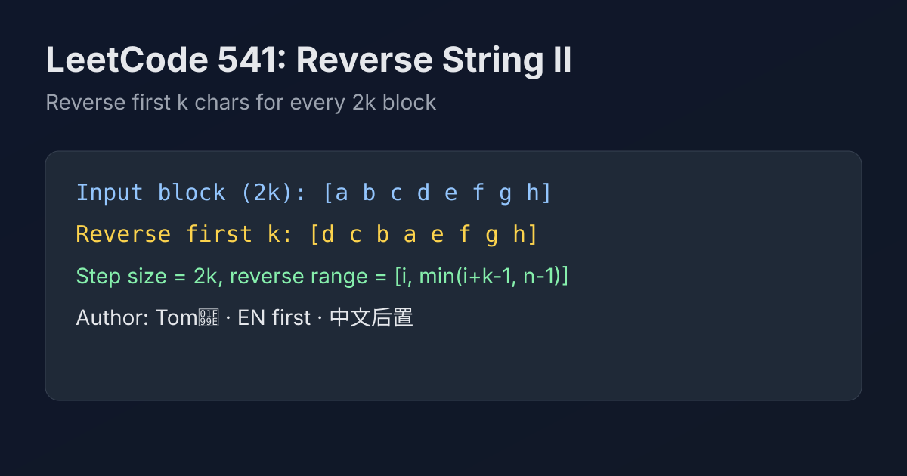

LeetCode 541: Reverse String II (Block-wise 2k Segment Reversal)
LeetCode 541StringTwo PointersToday we solve LeetCode 541 - Reverse String II.
Source: https://leetcode.com/problems/reverse-string-ii/

English
Problem Summary
Given a string s and integer k, reverse the first k characters for every consecutive block of 2k characters, then return the transformed string.
Key Insight
Process the string in jumps of 2k. For each block starting at i, only reverse range [i, min(i+k-1, n-1)]. The second half of each block remains unchanged.
Brute Force and Limitations
You could repeatedly slice substrings and concatenate, but that creates many intermediate strings and adds unnecessary overhead.
Optimal Algorithm Steps
1) Convert string to mutable char array.
2) For each start index i = 0, 2k, 4k..., set l=i, r=min(i+k-1,n-1).
3) Reverse with two pointers while l<r.
4) Convert array back to string.
Complexity Analysis
Time: O(n).
Space: O(n) in languages where string is immutable (char buffer for output).
Common Pitfalls
- Stepping by k instead of 2k.
- Forgetting partial last block where remaining chars < k.
- Off-by-one when computing right boundary.
Reference Implementations (Java / Go / C++ / Python / JavaScript)
class Solution {
public String reverseStr(String s, int k) {
char[] a = s.toCharArray();
int n = a.length;
for (int i = 0; i < n; i += 2 * k) {
int l = i, r = Math.min(i + k - 1, n - 1);
while (l < r) {
char t = a[l];
a[l++] = a[r];
a[r--] = t;
}
}
return new String(a);
}
}func reverseStr(s string, k int) string {
a := []byte(s)
n := len(a)
for i := 0; i < n; i += 2 * k {
l, r := i, min(i+k-1, n-1)
for l < r {
a[l], a[r] = a[r], a[l]
l++
r--
}
}
return string(a)
}
func min(x, y int) int {
if x < y {
return x
}
return y
}class Solution {
public:
string reverseStr(string s, int k) {
int n = (int)s.size();
for (int i = 0; i < n; i += 2 * k) {
int l = i, r = min(i + k - 1, n - 1);
while (l < r) swap(s[l++], s[r--]);
}
return s;
}
};class Solution:
def reverseStr(self, s: str, k: int) -> str:
a = list(s)
n = len(a)
for i in range(0, n, 2 * k):
a[i:i + k] = reversed(a[i:i + k])
return ''.join(a)var reverseStr = function(s, k) {
const a = s.split('');
const n = a.length;
for (let i = 0; i < n; i += 2 * k) {
let l = i, r = Math.min(i + k - 1, n - 1);
while (l < r) {
[a[l], a[r]] = [a[r], a[l]];
l++;
r--;
}
}
return a.join('');
};中文
题目概述
给定字符串 s 和整数 k，对每个连续的 2k 长度区间，仅反转前 k 个字符，返回处理后的字符串。
核心思路
按 2k 为步长分块。每一块从起点 i 开始，只反转 [i, min(i+k-1, n-1)]，后半段保持原样。
暴力解法与不足
反复切片+拼接虽然可行，但会产生很多临时字符串，开销更大，不如直接在可变字符数组上原地交换。
最优算法步骤
1）先把字符串转为字符数组。
2）从 i=0 开始每次跳 2k。
3）设 l=i、r=min(i+k-1,n-1)，双指针交换完成反转。
4）最后把数组转回字符串。
复杂度分析
时间复杂度：O(n)。
空间复杂度：O(n)（在字符串不可变语言中用于字符缓冲）。
常见陷阱
- 步长写成 k 而不是 2k。
- 最后一段不足 k 时没有正确处理。
- 右边界计算出现 off-by-one。
多语言参考实现（Java / Go / C++ / Python / JavaScript）
class Solution {
public String reverseStr(String s, int k) {
char[] a = s.toCharArray();
int n = a.length;
for (int i = 0; i < n; i += 2 * k) {
int l = i, r = Math.min(i + k - 1, n - 1);
while (l < r) {
char t = a[l];
a[l++] = a[r];
a[r--] = t;
}
}
return new String(a);
}
}func reverseStr(s string, k int) string {
a := []byte(s)
n := len(a)
for i := 0; i < n; i += 2 * k {
l, r := i, min(i+k-1, n-1)
for l < r {
a[l], a[r] = a[r], a[l]
l++
r--
}
}
return string(a)
}
func min(x, y int) int {
if x < y {
return x
}
return y
}class Solution {
public:
string reverseStr(string s, int k) {
int n = (int)s.size();
for (int i = 0; i < n; i += 2 * k) {
int l = i, r = min(i + k - 1, n - 1);
while (l < r) swap(s[l++], s[r--]);
}
return s;
}
};class Solution:
def reverseStr(self, s: str, k: int) -> str:
a = list(s)
n = len(a)
for i in range(0, n, 2 * k):
a[i:i + k] = reversed(a[i:i + k])
return ''.join(a)var reverseStr = function(s, k) {
const a = s.split('');
const n = a.length;
for (let i = 0; i < n; i += 2 * k) {
let l = i, r = Math.min(i + k - 1, n - 1);
while (l < r) {
[a[l], a[r]] = [a[r], a[l]];
l++;
r--;
}
}
return a.join('');
};
Comments